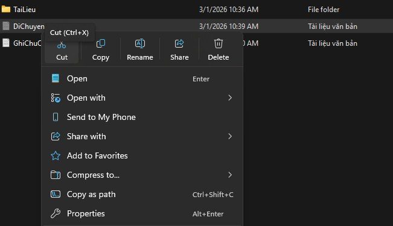

01
Chương 1 · Máy tính & thiết bị
Thao tác cơ bản với tệp tin và thư mục
Mục tiêu: Thành thạo các thao tác nền tảng quản lý dữ liệu trên hệ điều hành và thiết kế cấu trúc thư mục, quy tắc đặt tên hợp lý.

Minh chứng — cấu trúc thư mục & menu thao tác trên File Explorer
- Tạo cây thư mục ThucHanh → thư mục con TaiLieu với quy tắc đặt tên nhất quán.
- Thực hành đầy đủ: tạo, đổi tên, Copy/Cut–Paste, xóa, xóa vĩnh viễn & khôi phục từ Recycle Bin.
- Rút ra quy ước đặt tên tệp giúp tìm kiếm và quản lý hiệu quả.